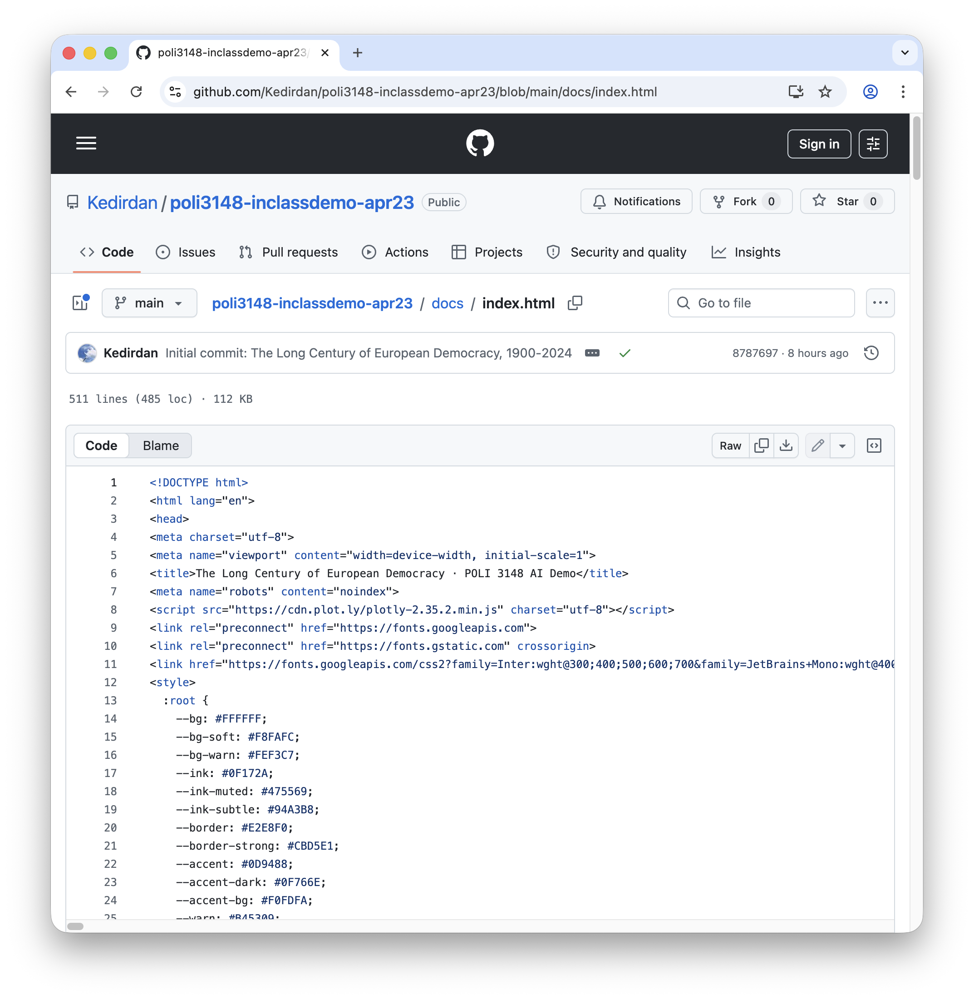

Make your files
visible to the world.
Kaidierdan Muzhapaer · Week 13 Lab · April 23, 2026
Git tracks every version
of your files.
University of Hong Kong
is in Pokfulam.
The University of Hong Kong
is in Pokfulam, Hong Kong.
The University of Hong Kong
is inis located in Pokfulam, Hong Kong.
The University of Hong Kong
is located in Pokfulam, Hong Kong.
Founded in 1911.
All four versions live on your computer, at once.
Git runs locally.
GitHub hosts code in the cloud.
Your computer
where Git lives
- Keeps every version, forever
- Works without internet
- Only you can see it
GitHub.com
where your code goes online
- Shareable · public URL
- Backed up automatically
- Collaborate with anyone
Alternatives exist, GitLab, Gitee, Bitbucket, corporate servers. We're using GitHub because it's the standard everyone meets eventually.
Same code, two places. push syncs your computer → GitHub. pull / clone brings GitHub → your computer.
Not every local file should sync to the cloud.
Large files, secrets, build artifacts: these stay on your computer. A single plain-text file decides.
GitHub Pages serves your HTML
as a public webpage.

We publish from /docs/. Your code can stay private, your webpage stays public. Requires GitHub Pro, free for you now.
Updating a published page takes two messages to Copilot.
dashboard.py, updated it, committed as "Rephrase subtitle", pushed to main.The Long Century of
European Democracy
Democracy in Europe, 1900–2024
Five Acts of European Democracy · 1900–2024
Same URL, new subtitle. No server configuration, no Git commands typed; the change is described to Copilot in natural language.
Pick a model. Give it permission to run terminal commands.
Click the model chip in the Copilot Chat input row. You'll see this dropdown, pick GPT-5.3-Codex:
If Codex hits a rate limit, any of the other three works. All four are "agentic", they plan, run commands, and recover from errors.
Bottom-right of the Copilot Chat panel, a chip says Default Approvals. Click it. You'll see this dropdown, switch to Autopilot (Preview):
Otherwise every terminal command pauses for your Allow click.
Do these two once. Every future prompt runs end-to-end without stopping to ask you.
Prompt 1 installs gh and authenticates you on GitHub.
gh, started the web login flow. Here is your one-time code.Prepare my machine so I can use GitHub from the terminal. Run every step below in my integrated terminal. Narrate one sentence before each command, show the tail of its output, and handle errors yourself. Stop only if truly blocked.
━━━ GLOBAL RULES ━━━
• Do NOT use `exit`, `||`, or nested subshells inside polling loops, those can close the wrapper shell. Use plain for-loops with `break`.
• When a command prompts for the macOS admin password, POST this message clearly in the chat:
WARNING: macOS is asking for your admin password in the terminal below.
Click into the terminal, type your login password, press Enter.
Characters WILL NOT appear as you type, that is a security feature, not a bug.
• When gh prints a one-time device code, POST it prominently in chat (not buried), with 4-step browser instructions and a 15-minute expiry warning.
• If any install step fails, DO NOT silently continue. Stop, clearly explain the failure, and point me to the manual download URL (https://github.com/cli/cli/releases/latest).
━━━ PHASE A · Install gh ━━━
1. Run `gh --version`. If it succeeds, skip to PHASE B.
2. Detect my OS (run `uname -s` on Unix or check `$env:OS` / `ver` on Windows).
3. macOS:
a) Run `which brew`. If Homebrew is present, run `brew install gh`, then go to step 6.
b) Otherwise do NOT install Homebrew (too invasive). Try the signed .pkg install:
ARCH=$(uname -m); [ "$ARCH" = "arm64" ] && A=arm64 || A=amd64
TAG=$(curl -sSI https://github.com/cli/cli/releases/latest | awk -F'/tag/' '/^location:/ {print $2}' | tr -d '
')
If TAG is empty OR the curl command fails: STOP and print the manual-install message (see below).
Otherwise:
VER=${TAG#v}
curl -fL -o /tmp/gh.pkg "https://github.com/cli/cli/releases/download/${TAG}/gh_${VER}_macOS_${A}.pkg"
→ post the sudo-password coach message, then run: sudo installer -pkg /tmp/gh.pkg -target /
If any command above fails (non-zero exit), STOP and print the manual-install message.
c) Manual-install message for macOS:
The automatic installer failed. Please install gh manually:
1. Open https://github.com/cli/cli/releases/latest in your browser.
2. Under "Assets", download the file ending in `_macOS_arm64.pkg` (Apple Silicon) or `_macOS_amd64.pkg` (Intel).
3. Double-click the downloaded .pkg file and follow the installer.
4. Re-paste Prompt 1 into Copilot Chat to continue.
4. Windows (PowerShell):
a) Try `winget install --id GitHub.cli -e --silent --accept-package-agreements --accept-source-agreements`.
b) If winget is unavailable OR the command fails, STOP and print the manual-install message:
The automatic installer failed. Please install gh manually:
1. Open https://github.com/cli/cli/releases/latest in your browser.
2. Under "Assets", download the file ending in `_windows_amd64.msi`.
3. Double-click the .msi file and follow the installer.
4. Re-paste Prompt 1 into Copilot Chat to continue.
5. Linux:
a) Follow https://github.com/cli/cli/blob/trunk/docs/install_linux.md for your distribution.
b) If unclear, STOP and ask me to install manually, then re-paste Prompt 1.
6. Confirm with `gh --version`. If it still fails, STOP.
━━━ PHASE B · Authenticate ━━━
7. Run `gh auth status`. If already logged in, skip to step 10.
8. Run: `gh auth login --hostname github.com --git-protocol https --web --scopes repo,workflow,delete_repo`
9. Extract the 8-digit device code from output. Post this boxed message in chat:
━━━━━━━━━━━━━━━━━━━━━━━━━━━━━━━━━━━━
YOUR ONE-TIME CODE: XXXX-XXXX
Valid for 15 minutes, do this now.
━━━━━━━━━━━━━━━━━━━━━━━━━━━━━━━━━━━━
1. A github.com/login/device tab should have auto-opened.
If not, open it manually now.
2. Paste the code into the 8 boxes, click "Continue".
3. Review the scopes, click the green "Authorize".
4. "Congratulations, you're all set!" → come back to VS Code.
Poll with a safe for-loop (no exit, no ||):
for i in 1 2 3 4 5 6 7 8 9 10 11 12 13 14 15 16 17 18 19 20; do
gh auth status && break; sleep 5;
done
If the loop ends without login (code expired), re-run `gh auth login …`, post the new code, and poll again.
10. Run `gh api user --jq .login` to confirm. As your final message, print on its own line:
Environment ready. Logged in as <username>. You're set to deploy.
Complete the device-login flow in your browser.
Authorize your device
Enter the code displayed on the device you're signing in to.
Congratulations, you're all set!
Your device is now authorized to access GitHub on behalf of Kedirdan. You can close this window and return to VS Code.
Back in VS Code, Copilot finishes with Environment ready. Logged in as <username>.
Prompt 2 publishes the current workspace to GitHub Pages.
Kedirdan/POLI3148_2026Spring_GitHubPagesDemo, pushed the files, enabled Pages from /docs, waited for the build. Wrote GITHUB_PAGES.md with a log of what I did.Please clone my instructor's demo project to my Desktop so I can practice the deploy flow on it. Narrate one sentence before each command, show the tail of output, handle errors. ━━━ SETUP ━━━ SOURCE="https://github.com/Kedirdan/POLI3148_2026Spring_GitHubPagesDemo" TARGET="~/Desktop/POLI3148_2026Spring_GitHubPagesDemo" ━━━ STEPS ━━━ 1. `cd ~/Desktop` and check whether `POLI3148_2026Spring_GitHubPagesDemo` already exists. If so, stop and tell me it's already cloned. 2. `git clone "$SOURCE" "$TARGET"`. Show the tail of the clone output. 3. `cd "$TARGET"` and `git remote remove origin` so the clone is detached from my instructor's repo (ignore error if no origin). 4. Final message, on its own line: Demo ready at ~/Desktop/POLI3148_2026Spring_GitHubPagesDemo. Open that folder in VS Code (File → Open Folder), then paste Prompt 2.
Please publish this VS Code workspace to GitHub Pages. Use the folder I currently have open, don't ask me for a path. Narrate one sentence before each command, show the tail of output, handle errors yourself.
━━━ GUIDING PRINCIPLES ━━━
• Minimal disruption: only touch files that must be changed to make GitHub Pages work. Leave my existing project structure alone.
• Scientific copy: never move or delete non-web files (`.py`, `.ipynb`, `.md`, `.txt`, `.json`, `.csv`, `data/`, `src/`, etc). If the webpage has to be relocated into `docs/`, COPY (do not move) the web files.
• Honest errors: if the build does not finish, do not pretend it succeeded. Report the real state.
• Document what you did: create a new file `GITHUB_PAGES.md` at the root, summarising the exact changes. Never touch the student's existing `README.md` or any other file in the project.
━━━ PHASE A · Check prerequisites ━━━
1. `gh --version` and `gh auth status`. If either fails, stop and tell me to run Prompt 1 first.
2. `pwd` to confirm the workspace root.
3. If `.git` already exists AND a remote named `origin` is configured AND there are existing commits, stop and ask me how to proceed. Do NOT overwrite an existing repository.
━━━ PHASE B · Locate the webpage ━━━
4. Decide which structure to use:
a) If `docs/index.html` already exists, reuse it. No file moves needed.
b) Else if `index.html` exists at the root (but no `docs/index.html`), create `docs/` and **copy** (use `cp`, not `mv`) only these items into it:
- Every `.html` file at the root.
- Every `.css`, `.js` file at the root.
- These subdirectories if they exist: `assets/`, `images/`, `img/`, `css/`, `js/`, `fonts/`, `media/`.
- Do NOT copy: `.py`, `.ipynb`, `.md`, `.txt`, `.json`, `.yml`, `.yaml`, `.csv`, `data/`, `src/`, `scripts/`, `notebooks/`, or any hidden folder.
After copying, confirm `docs/index.html` exists.
c) Else, stop and tell me: "No `index.html` found at root or in `docs/`. This project has no webpage to publish."
━━━ PHASE C · Configure .gitignore ━━━
5. Build the list of rules every student project should ignore:
# macOS / editor
.DS_Store
Thumbs.db
.vscode/
.idea/
# Python
__pycache__/
*.pyc
.venv/
venv/
.ipynb_checkpoints/
# Node
node_modules/
npm-debug.log*
# Secrets, never commit these
.env
.env.local
*.key
*.pem
# Large data, opt-in
data/raw/
*.csv.gz
If `.gitignore` does not exist, create it with the full list above.
If `.gitignore` already exists, APPEND any rules from the list that are missing. Never remove or rewrite rules the student already has.
━━━ PHASE D · Init git + first commit ━━━
6. If `.git` does not exist: `git init -b main`.
7. OWNER=$(gh api user --jq .login)
8. If `git config user.email` is empty:
git config user.name "$OWNER"
git config user.email "${OWNER}@users.noreply.github.com"
━━━ PHASE E · Create GitHub repo + push ━━━
9. REPO=$(basename "$PWD")
10. `gh repo create "$REPO" --public --source=. --remote=origin --push` (this stages + commits + pushes in one go via the flag).
If step 10 fails because `.git` exists but there's nothing to commit yet, first run `git add . && git commit -m "Initial deploy to GitHub Pages"` and retry.
11. If "name already exists": REPO="${REPO}-$(date +%m%d)"; retry step 10.
━━━ PHASE F · Enable Pages from /docs ━━━
12. `gh api --method POST repos/$OWNER/$REPO/pages -f source[branch]=main -f source[path]=/docs`
━━━ PHASE G · Poll build (≤200s) ━━━
13. Poll 25 times, 8 seconds apart:
for i in 1 2 3 4 5 6 7 8 9 10 11 12 13 14 15 16 17 18 19 20 21 22 23 24 25; do
S=$(gh api repos/$OWNER/$REPO/pages --jq .status 2>/dev/null)
echo "[$i] $S"
[ "$S" = "built" ] && break
sleep 8
done
━━━ PHASE H · Write GITHUB_PAGES.md ━━━
14. Create a new file `GITHUB_PAGES.md` at the workspace root. Never touch the student's existing `README.md` or any other file. Fill in actual values for <OWNER>, <REPO>, today's ISO date, and the list of actions you actually took:
# GitHub Pages deployment
Generated by Prompt 2 on <ISO date>.
## Where the page lives
- Repository: https://github.com/<OWNER>/<REPO>
- Live webpage: https://<OWNER>.github.io/<REPO>/
- Pages source: `main` branch, `/docs` folder.
- Build status at end of Prompt 2: <built | still running>
## What Prompt 2 changed in this workspace
<One bullet per actual action, for example:
- "Created `docs/` and copied `index.html`, `style.css` into it."
- "Created `.gitignore` with default rules for macOS, Python, Node, secrets, large data."
- "Appended `.DS_Store` and `__pycache__/` to existing `.gitignore`.">
## What Prompt 2 did NOT change
- Your `README.md` and every existing file in the project were not modified.
- Your `.py`, `.ipynb`, `.txt`, `.csv`, and `data/` files are untouched.
- Files were copied into `docs/`, not moved. Your root webpage still exists if it was there before.
## How to update the page later
Edit any file, then ask Copilot: *"Commit and push."* The live page rebuilds on its own.
## How to undo
- Disable Pages in the repo settings, or delete the `/docs/` folder and push.
- Delete the repository: `gh repo delete <OWNER>/<REPO>`.
## Questions
Ask Copilot (me) about any step above. I can explain why each command was run, or help adjust the setup for your specific project.
15. Commit: `git add GITHUB_PAGES.md && git commit -m "docs: add GitHub Pages deployment log" && git push`.
━━━ PHASE I · Report ━━━
16. Check final build status from step 13.
- If `$S = built`, print on its own line:
Live at https://$OWNER.github.io/$REPO/
See GITHUB_PAGES.md for a full log of what was done. Ask me if anything is unclear.
- Otherwise, print:
The build is still running. Visit https://$OWNER.github.io/$REPO/ in one minute and refresh.
See GITHUB_PAGES.md for a full log of what was done.
Your turn
Start your deployment. Ask questions at any time.